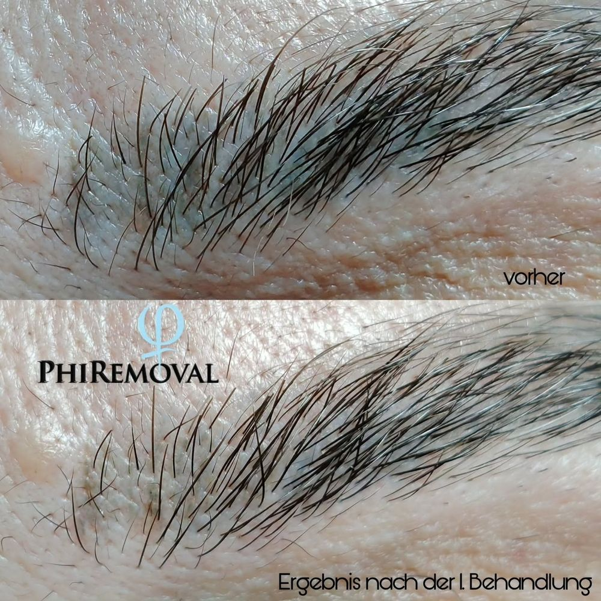

Korrektur & Entfernung
PhiRemoval in Landshut: Permanent Make-up entfernen ohne Laser
Ein altes Permanent Make-up passt nicht mehr oder ist misslungen? Mit PhiRemoval werden Farbpigmente ohne Laser entfernt oder korrigiert, mit individueller Beratung im Mel Beauty Studio in der Landshuter Neustadt.
- Gesicht: 149 €
- Körper: individuell
- Methode: ohne Laser

So funktioniert PhiRemoval
Ohne Lasertechnologie werden Farbpigmente präzise entfernt. Mit hautschonenden Produkten lassen sich fehlerhafte Permanent Make-ups und Microblading entfernen oder korrigieren.
Auch Tattoos am Körper können mit PhiRemoval entfernt oder korrigiert werden. Wie viele Sitzungen nötig sind und wie das Ergebnis aussehen kann, klärt Meltem in einer persönlichen Beratung.
- Gesicht
- 149 €
- Körper
- Preis individuell
- Methode
- Ohne Laser, mit hautschonenden Produkten
Neu pigmentieren nach der Entfernung
Wenn ein fremdes Permanent Make-up korrigiert und anschließend neu gestaltet werden soll, gilt für das Nacharbeiten der Neupreis der jeweiligen Behandlung.
Preise
- PhiRemoval Gesicht149 €
- PhiRemoval Körperindividuell
Alle Preise in Euro, Stand 11/2026.
Ablauf
- TerminPer Telefon, WhatsApp oder Instagram-DM.
- BeratungIndividuell abgestimmt, Brauen vermessen nach dem Goldenen Schnitt.
- BehandlungMit sterilen, personengebundenen Aufsätzen.
- NachbehandlungNach 21 Tagen, bei PhiBrows, Powder Brows, Lippen und Linern im Preis enthalten.
Häufige Fragen
Kann altes Permanent Make-up entfernt werden?
Ja. Mit PhiRemoval werden fehlerhafte Permanent Make-ups, Microblading oder Tattoos ohne Laser entfernt oder korrigiert. Für das Nacharbeiten von Fremdarbeiten gilt der Neupreis.